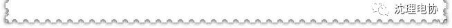

2017电协干事录取名单

电子技术与应用协会行政部招新圆满结束，以下是通过面试进入到电子技术与应用协会干事的名单。小编在这里要告诉那些遗憾落选的同学们，只要你有一颗学习的心，有做事的热情，那就不要放弃，再接再厉。我们将所有未入选行政部的同学们全部归入技术部预备成员，希望大家努力学习，再接再厉！希望大家能够在电协的路上越走越远。


蔡毓鑫 赵泉旭 赵缘媛
谢雨轩 林佳慧
李恩辉 阮琳杰 马翔
徐婷婷 刘艺

吕莹莹 孙泓玉 张琪昌
曹李钧 范永鑫

徐紫阳 梅耀匀 隋馨缘
杨杰 朱宇宁 李硕

刘聪 张诗梦 陈智
席子雯 阮倩雯 魏朋
申胜勋 白皓天 罗杰
毕光宇 符阳懿 张涛
王明铭 王同远

微信号：sylgdzxh